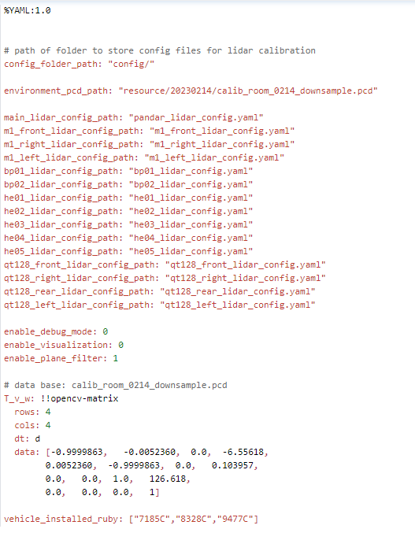

Lidar Calib adapts to the car end calibration
There is no longer dependencies to Commly_config.yaml. Wheel distance information and folder paths that store calibration data are now passed through the command line parameters:
./bin/multi_lidar_calib ./config/multi_lidar_calib_config.yaml wheel_base(mm) lidar_calib_data_folder_path
Add the interface to get the version number: ./bin/multi_lidar_calib -v
Multi_lidar_calib_config.yaml new configuration parameters enable_visualization， It is used to control whether the point cloud visual window pops up at each stage of the calibration, and the default is closed
The calibration result will be stored in lidar_calib_data_folder_path/ lidar_calib_result, logs and intermediate data will be stored in lidar_calib_data_folder_path/ lidar_calib_log
